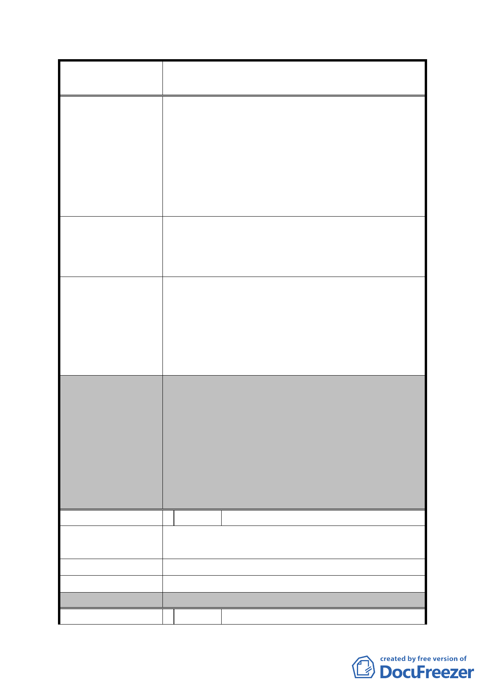

案名
變更臺北市內湖區蘆洲里附近部分工業區為
保護區、住宅區及道路用地主要計畫案
1.因焚化爐、垃圾山、資源回收場之設置，限制
本區發展 30-40 年，應有回饋補償。
2.重劃應考量當地民眾需求意願，並且真正有利
未來發展，不是墨守成規、照章行事。
3.本區地勢狹長、封閉聯外交通極不便且大眾運
輸不足屬邊緣地帶，未來發展性遠不如內科。
4.有住宅區但未規劃商業區或住商混合區，不完
整。
一、 本大樓原位置保留建物。
建
議
辦
法
二、
將重劃 A 區及 B 區變更為商業區、住商混合區
及住宅區，大刀闊斧改善，讓本區脫胎換骨恢
復生機。
一、 有關原位置保留建物 1 節，經初步評估採剔除
於重劃範圍外或採原位置保留兩方案皆屬可
發展局回應意見
行，惟採原位置保留將須繳納差額地價。
二、 另有關建議將工業區變更為住宅區等節，查本
計畫案業參酌地區相關意見，劃設部分住宅區
以滿足地區住戶需求。
一、 市地重劃範圍部分，依發展局本次大會所提
扣除範圍內「聰明社區」與「彩虹大樓」，以
及「為配合捷運民生汐止線路線及車站佈設
所指定留設公共開放空間，變更為道路用地
委員會決議
(供捷運設施使用)，並增加重劃範圍」之方
案予以通過，對於所附重劃負擔之計算資料
僅供參考。
二、 本案取消原計畫公開展覽範圍內住宅區及保
護區劃設之構想，將全區變更為科技工業區。
編 號 4 陳情人 陳登源
陳 情 理 由 建議能重劃時拆屋以屋換屋抽取 15 年國民住宅低
利率的房貸。
建 議 辦 法 同上。
發 展 局 回 應 意 見 依重劃相關規定辦理。
委員會決議
非本會審議事項，請市府參考。
編 號 5 陳情人 黃台生
- 15 -